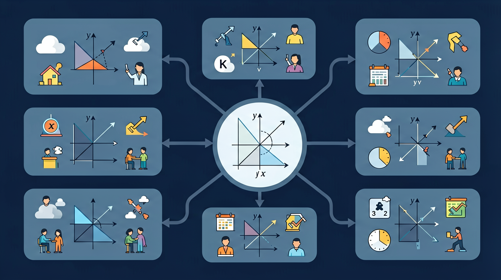

❓ 为什么方程两边可以同时加减同一个数？
❓ 怎么知道该用加法还是减法来解方程？
❓ 老师说的'移项要变号'到底是什么意思？
学完这一课，这些问题你都能自信地回答。
🎯 能说出等式两边保持平衡的原理
🎯 能判断一步加减法方程的正确解法
🎯 能计算含未知数的购物找零问题

在学习新内容之前，先测测你的基础知识！
Q1：x+5=12，x等于多少？
Q2：方程中的"x"代表什么？
方程是含有未知数的等式。未知数通常用 x, y 表示。
解方程就是求使方程成立的未知数的值，也叫方程的解。
验证：5 + 3 = 8 ✓
设定方程类型和数值，查看分步解题过程
输入x的值，验证是否满足方程
简单方程已完全掌握！
完成学习后，用这两道题检验你的掌握程度！
Q1：解方程：3x=18，x=？
Q2：列方程：小明有x本书，给了弟弟5本后还剩8本，方程是？
记忆口诀：方程两边同加同减，等式不变；同乘同除（不为0），等式不变。助记：天平保持平衡——左边加重，右边也要加同样重量。口诀："等式两边同操作，平衡不变可解x；移项要变号，验算别忘记。"
⚠️ 如果你做错了，看看错在哪里：
如果你移项时忘记变号（如x+5=12写成x=12+5=17），你忘了等式的平衡原理。移项实际是两边减去相同的数：x+5-5=12-5，所以x=7。
💡 自查方法：把答案代回原题验证，如果算出矛盾就说明中间有错误！
从记忆→理解→应用→分析，逐步深化你的理解！
📌 记忆层（识别）：选出下面哪个是简单方程的正确说法：
解释：为什么移项要变号？
🔍 理解层（解释）：用自己的话解释概念，并比较区别
分析：解方程2x+3=11的每个步骤。判断：x=3是否满足方程2x+1=7？
⚡ 分析层（判断）：判断以下说法是否正确，并说明理由
💡 背后的原理
🔍 本质：方程是"平衡"的概念——天平两边等重。合法操作：两边加/减/乘/除同一个数（不为0）。方程思想从"算术"升级到"代数"，用未知数表达关系。
先独立作答，再点选项查看对错与错因。
超市鸡蛋促销：买5盒送1盒。小明共得到42盒，设实际付款盒数为x，正确方程是
解方程3(x-2) = 2x+5时，第一步应
下列哪个问题适合用方程解决？
若____ + 15 = 3×12，则横线处应填
答案：21
先计算右边得36，再移项得36-15=21
方程2x - ____ = 10的解是x=8，则空缺数应为
答案：6
将x=8代入得16-?=10，故?=6
关于方程5x=3x+4，正确的是
调查本班同学每周零花钱数额，设计最优储蓄与消费比例
✅ 数字搬家要带符号搬家
💡 只关注数字忽略运算符号
✅ x在减数位置时用加法解
💡 没理解'求减数=被减数-差'
And：学生已会加减乘除运算
But：不知道如何用字母表示未知数
Therefore：帮孩子理解方程的桥梁作用
方程就像天平，左边和右边要相等。比如小明有5块糖，妈妈又给他一些，现在共有8块。我们可以用方程表示：5 + x = 8，这里的x就像个小问号，代表妈妈给的糖数。解方程就是算出x等于3，因为5加3确实等于8呀！
🌍 就像玩跷跷板时，两边小朋友体重不同，要移动座位才能平衡。方程就是数学里的平衡游戏！
哪个是方程？
And：已认识方程形式
But：不会用逆运算解方程
Therefore：掌握解方程的万能钥匙
解方程就像破案，要用逆运算找线索！比如x+4=9，加法的逆运算是减法，所以两边同时减4：x=9-4，得到x=5。再检验：5+4确实等于9。记住口诀：'同加同减，同乘同除，天平两边要同步'！
🌍 就像玩迷宫游戏时，从出口倒着走更容易找到路，逆运算就是数学里的倒推法。
x-3=12的解是？
And：会基本解法
But：常忘记检验答案
Therefore：养成严谨的数学习惯
解完方程要像小老师一样检查！比如2x=10，解得x=5。检验时把5代回去：2×5=10，等式成立才算对。如果遇到3x+1=13，解出x=4后要算：3×4+1=13，13=13√。养成验算习惯，考试不丢冤枉分！
🌍 就像做完手工要检查有没有漏粘胶水，验算是方程的'质量检查员'。
x÷2=6的解通过验算是？
And：学生已经学会用算术方法解决简单问题
But：遇到复杂问题时算术步骤多容易出错
Therefore：用方程能更清晰地表达数量关系
方程就像天平，两边要一样重。比如小明有5块糖，妈妈又给他一些后共有9块，设妈妈给了x块，可以写成方程：5 + x = 9。解这个方程时，我们像称东西一样两边同时减5，得到x=4。方程里的字母代表未知数，解方程就是找出这个数使等式成立。
🌍 就像玩跷跷板时，要让两边小朋友体重加起来相等才能平衡。超市买水果时，如果知道苹果和梨的总价，就能用方程算出每种水果的价格。
小华有8元钱，买铅笔花了x元后还剩3元，哪个方程正确？